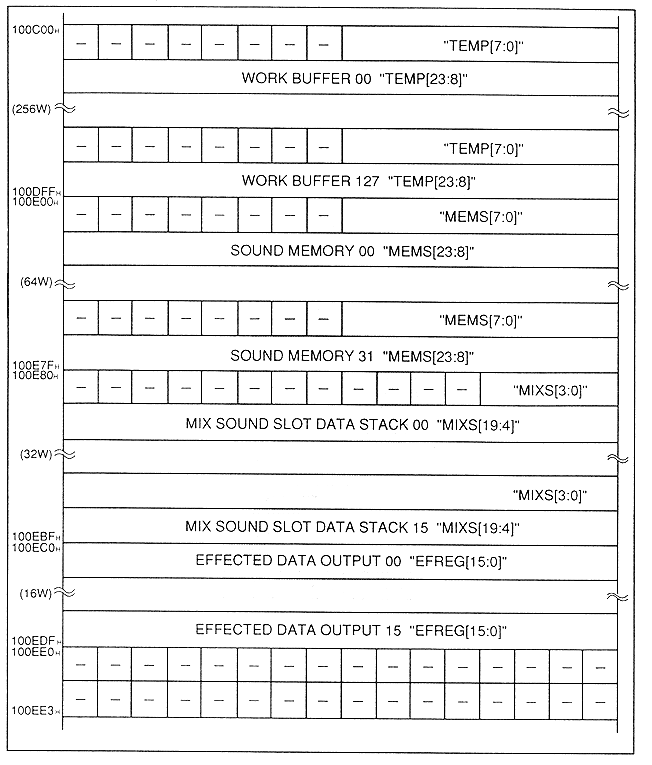

Return to previous page
｜
Return to menu
｜
Go to next page
Figure 4.7 Buffer map in DSP

Table 4.8 Buffer in DSP
Name
Contents
TEMP
DSP temporary (general purpose) buffer
MEMS
Memory data stack
MIXS
Mix stack
EFREG
Effect register
Return to previous page
｜
Return to menu
｜
Go to next page